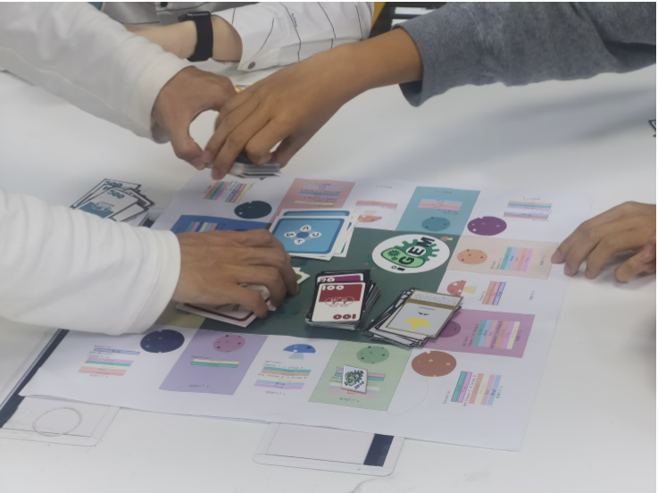

Contribution
At the very beginning of our team's plan, we went to our school's wet lab, Team USTC, to learn something about synthetic biology. During our stay, we recognized that biobricks is very important, considering we must design software which could greatly help with experimenters working with biobricks. We asked our wet lab concerning what's the most difficult and was replied that they often found it troublesome when deciding to use which kind of biobricks, so we thought we should work out this problem. With this belief, we complete our software, contributed much to the iGEM community. Several contributions can be listed as follows.
Biobricks Recommendation

Users can find their best biobricks instantly by our well-designed algorithm. Thus, with another metabolites prediction function insert, our software is able to greatly lessen the users' searching pressure. By using our software, user can both acquire their biobricks in a very short time without any needless thinking and get the best metabolic net design immediately. We are sure synthetic biologists can greatly benefit from us biobricks recommendation system.
iSTC-A Board Game Introducing Biobricks

To promote public awareness of synthetic biology and introduce its basic ideas to the laymen, our team is devoted to the development of a board game which aims at instructing non-biologists to understand what biobricks can do and how can we use them to make new things. Compared with other syn-bio relating games, ours is more significant because we deeply integrate the gameplay and iGEM concept together. For example, we made biobricks the core element in our board game, and our game is elaborately designed to satisfied both specialists and laymen.
References
- Figure 1: http://www.netimperative.com/2019/04/facebook-sheds-light-on-news-feed-and-advertising-algorithm-secrets/